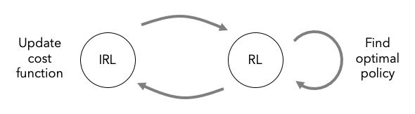
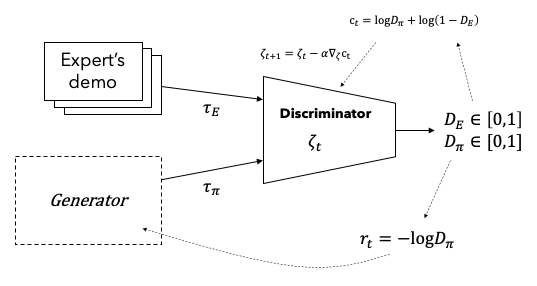
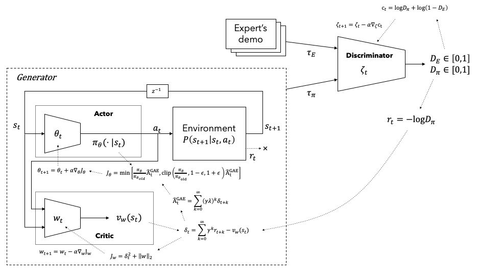
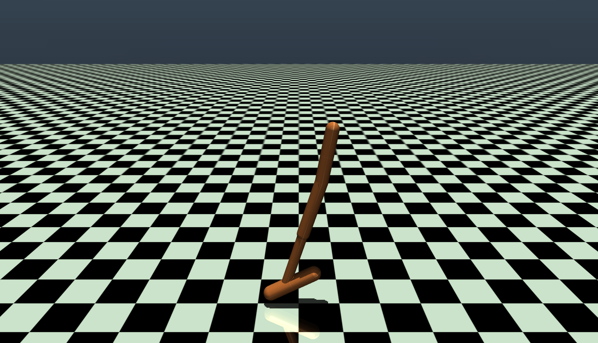
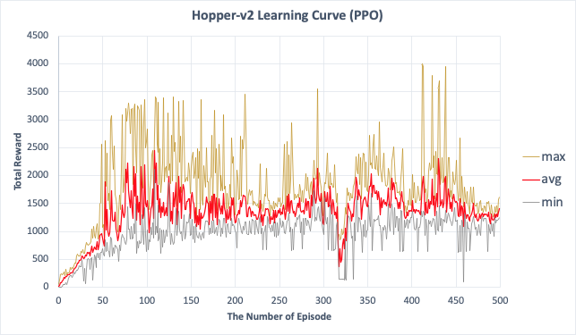
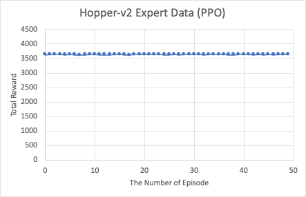
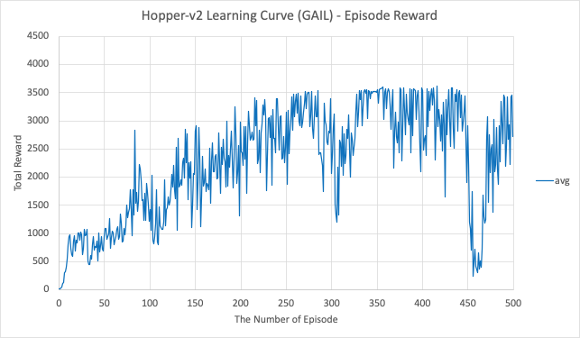
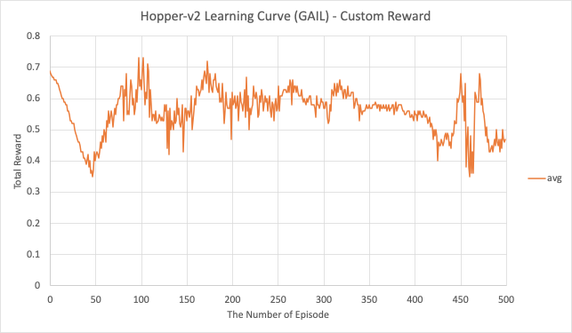
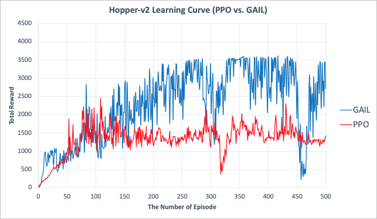

인간이나 동물(이하 전문가)의 숙련된 행동으로부터 정책을 학습하는 과정을 모방학습(imitation learning) 이라고 한다. 전문가의 상태-행동(state-action) 데이터로부터 지도학습(supervised learning)과 같은 방법으로 에이전트를 학습시키는 행동복제(behaviour cloning) 가 있으나 학습된 에이전트가 경험하지 못한 상태를 만났을 때 적절한 대응을 하지 못하는 문제가 있어 제한적으로 사용되고 있다. 이러한 한계를 극복하기 위하여 전문가의 행동으로부터 보상함수를 찾은 후 그 보상함수로 최적정책을 찾는 역강화학습(inverse RL, 이하 IRL) [1]이 제안되었다. 전문가의 정책을 최적정책이라고 가정하고 전문가가 추구하는 미지의 보상함수를 찾으면 역으로 최적정책을 찾을 수 있다는 아이디어이다.
과감히 말하자면 모든 IRL은 아래 문장으로 표현할 수 있다.
"전문가의 가치가 다른 모든 학습자의 가치보다 더 크다." - 문장 A
정책 \pi의 가치는 \gamma-할인된 보상 R의 합의 기대값으로써 식 (1)과 같이 구할 수 있다.
V(\pi)=\mathbb{E}_{\pi}\left[R(s,a)\right]\tag{1}
여기서 t\ge0에 대하여 s_0\sim p_0, a_t\sim\pi(\cdot|s_t), s_{t+1}\sim P(\cdot|s_t,a_t)이며 \mathbb{E}_{\pi}\left[R(s,a)\right]\triangleq\mathbb{E}\left[\sum_{t=0}^\infty\gamma^t R(s_t,a_t)\right]으로 정의된다.
문장 A는 아래의 두 문장으로 분리할 수 있다.
"학습자 A는 모든 학습자 중 가장 높은 가치를 얻는다." - 문장 B
"전문가의 가치가 학습자 A의 가치보다 더 크다." - 문장 C
문장 B는 주어진 보상함수에 대하여 최적정책을 찾는 강화학습(reinforcement learning, 이하 RL)이다.
\max_{\pi} V(\pi)\tag{2}
문장 C로부터 보상함수를 찾는 방법을 도출할 수 있다. 수식으로 표현하면 아래와 같다.
\max_R V(\pi_E)-V(\pi)\tag{3}
\pi_E는 전문가의 정책을 의미한다. 전문가 가치와 학습자 가치의 차이를 최대화하는 보상함수가 우리가 찾고자 하는 전문가의 정책을 만들어내는 보상함수이다.1
수식 (2)와 (3)을 합하면 다음과 같이 표현할 수 있다.
\max_R\min_\pi V(\pi_E)-V(\pi)\tag{4}
결국 IRL은 모든 학습자의 정책보다 전문가 정책을 더 높게 표현하는 보상함수를 찾은 후 보상함수를 이용하여 정책을 최적화하는 과정이라고 할 수 있다. 실제 구현에서는 수식 (2)와 수식 (3)으로 표현되는 min-max 과정이 수렴할 때까지 교대로 반복된다.
1 이와 같이 보상함수를 찾는 과정만을 IRL이라고 표현하는 문헌도 있다. 이런 경우에는 최적정책까지 구하는 전 과정을 도제학습(apprenticeship learning)이라고 부르기도 한다.
최적화 관점에서 보상은 비용의 반대개념이라고 할 수 있다. 즉, 에이전트는 보상을 최대화하거나 비용을 최소화하려고 행동한다. 식 (4)의 보상함수를 비용함수로 표현하면 다음과 같다. [2]
\max_{c\in\mathcal{C}}\left(\min_{\pi\in\Pi}-H(\pi)+\mathbb{E}_{\pi}[c(s,a)]\right)-\mathbb{E}_{\pi_E}[c(s,a)]\tag{5}
여기서 c는 비용함수, \mathcal{C}는 비용함수공간, \Pi는 정책공간이며 \gamma-할인 엔트로피가 H(\pi)\triangleq\mathbb{E}_{\pi}[-\log\pi(a|s)]로 정의된다. 보상이 비용으로 변경되면서 전문가 항(term)과 학습자 항의 부호가 바뀐 것에 주의해야 한다.
동일한 비용(보상)을 얻는 정책은 유일하지 않으므로(ill-posed problem) 적절한 정규화(regularization)가 필요한데 전통적인 \ell_1-norm [1:1] 또는 \ell_2-norm [3]을 사용하는 대신 정책의 엔트로피를 최대화하는 방식 [4]이 제안되어 널리 사용되고 있다. 정책의 엔트로피를 최대화한다는 것은 한 번도 경험하지 못한 상태에서는 동일한 확률(최대 엔트로피)로 행동을 선택한다는 의미 [5]이며 이는 Jaynes의 최대 엔트로피 원리(MaxEnt) [6]를 응용한 것이다.
식 (5)에서 괄호 안은 주어진 비용함수 c에 대하여 최적정책을 찾는 RL 과정이며 식 (6)으로 표현할 수 있다. 또한 IRL은 주어진 전문가 정책 \pi_E(실제로는 전문가의 경험 데이터가 주어짐)에 대하여 비용함수 c를 찾는 과정이다.
\text{RL}(c)=\argmin_{\pi\in\Pi}-H(\pi)+\mathbb{E}_{\pi}[c(s,a)]\tag{6}
c=\text{IRL}(\pi_E)\tag{7}
IRL을 이용한 모방학습을 도시화하면 Figure 1과 같다. 주어진 전문가의 경험 데이터로부터 비용함수를 업데이트하고 이를 이용하여 최적정책을 찾는 과정을 반복한다. 연속공간에서의 다차원 시스템과 같이 스케일이 큰 환경인 경우 비용함수가 업데이트될 때마다 장시간 소요되는 RL을 수행해야 하는 이러한 방법은 현실적으로 사용하기 어렵다. 따라서 실용적인 방법이 필요하다.

IRL 초기에는 비용함수(또는 보상함수)를 피처벡터의 선형조합으로 구성하고 SVM(Support Vector Machine) [3:1] 또는 게임이론(game theory)을 차용[7]하여 선형계수를 구하는 방법을 사용하였다. 하지만 피처벡터를 설계해야 하고 복잡한 비용함수를 표현할 수 없다는 단점으로 인하여 최근에는 심층신경망(Deep Neural Network, 이하 DNN)을 이용하는 방법이 선호되고 있다. 표현력이 우수한 DNN을 사용할 경우 쉽게 과적합(overfit)이 될 수 있기 때문에 적절한 정규화가 필요하다. 식 (8)은 식 (7)에 비용함수를 위한 볼록정규함수(convex regularizer) \psi를 추가한 식이다. [2:1]
\max_{c\in\mathcal{C}}-\psi(c)+\left(\min_{\pi\in\Pi}-H(\pi)+\mathbb{E}_{\pi}[c(s,a)]\right)-\mathbb{E}_{\pi_E}[c(s,a)]\tag{8}
Ho & Ermon은 정책에 대한 점유도(occupancy measure) \rho_\pi를 식 (9)와 같이 정의하였다. 점유도는 에이전트가 정책 \pi를 따를 때 만나는 상태-행동의 비정규 분포(unnormalized distribution of state-action pairs)를 의미한다. 점유도를 이용하면 경로 샘플데이터를 따라 시간축으로 표현하는 기대값을 상태-행동 공간에 대한 분포의 합으로 변환할 수 있다. 식 (10)과 같이 비용의 기대값을 점유도로 표현할 수 있다. 점유도는 정책과 1 대 1 대응관계를 갖는다. [2:2]
\rho_\pi(s,a)=\pi(a|s)\sum_{t=0}^\infty\gamma^t\Pr(s_t=s|\pi)\tag{9}
\mathbb{E}_\pi[c(s,a)]=\sum_{s,a}\rho_\pi(s,a)c(s,a)\tag{10}
점유도를 이용하면 식 (8)을 식 (11)과 같이 변환할 수 있으며 전문가 정책에 근접한 정책 \hat\pi_E을 식 (12)로 구할 수 있다.
\begin{aligned}
&\max_{c\in\mathcal{C}}-\psi(c)+\left(\min_{\pi\in\Pi}-H(\pi)+\mathbb{E}_{\pi}[c(s,a)]\right)-\mathbb{E}_{\pi_E}[c(s,a)] \\
&=\max_{c\in\mathcal{C}}\min_{\pi\in\Pi}-H(\pi)-\psi(c)+\mathbb{E}_{\pi}[c(s,a)]-\mathbb{E}_{\pi_E}[c(s,a)] \\
&=\max_{c\in\mathcal{C}}\min_{\pi\in\Pi}-H(\pi)-\psi(c)+\sum_{s,a}\rho_\pi(s,a)c(s,a)-\sum_{s,a}\rho_{\pi_E}(s,a)c(s,a) \\
&=\max_{c\in\mathcal{C}}\min_{\pi\in\Pi}-H(\pi)-\psi(c)+\sum_{s,a}\left[\rho_\pi(s,a)-\rho_{\pi_E}(s,a)\right]c(s,a) \\
&=\min_{\pi\in\Pi}-H(\pi)+\psi^*(\rho_\pi-\rho_{\pi_E})\\
\end{aligned}\tag{11}\hat\pi_E=\argmin_{\pi\in\Pi}-H(\pi)+\psi^*(\rho_\pi-\rho_{\pi_E})\tag{12}
여기서 \psi^*는 \psi의 볼록켤레함수(convex conjugate function)2이다. 식 (11)의 네 번째 줄에서 -\psi(c)+\sum_{s,a}\left[\rho_\pi(s,a)-\rho_{\pi_E}(s,a)\right]c(s,a)를 최대화한다는 것은 볼록정규함수 \psi(c)를 최소화하면서 학습자의 방문빈도가 낮고 전문가의 방문빈도가 높은 상태-행동일수록(\rho_\pi(s,a)-\rho_{\pi_E}(s,a)<0) 비용 c(s,a)를 최소화하고 반대인 경우 비용을 최대화한다는 의미이다. 이는 초기 IRL에서 전문가와 학습자의 피처벡터 마진을 최대화하는 비용함수를 구하는 것과 유사한 개념이다. 한편 함수 \psi^*는 학습자와 전문가의 점유도 차이를 인자(function argument)로 하는 볼록함수이다. 식 (11)의 마직막 줄에서 \psi^*를 최소화한다는 것은 전문가 점유도와 최대한 유사한 점유도를 갖는 정책을 찾는 것을 의미하며 이는 전문가 정책에 최대한 근접한 학습자 정책을 찾는 것이라고 할 수 있다.
요약하면 식 (11)은 전문가의 비용을 최소화하는 비용함수를 찾고 그 비용함수를 이용하여 전문가 정책에 최대한 근접한 정책을 구하는 과정을 표현한다.
2 f^*(x):\sup_{y}x^T y-f(y), f(x)가 non-convex 하더라도 f^*(x)는 convex 하다.
만약 비용함수에 대한 정규함수 \psi가 상수인 경우 최적화 관점에서 정규함수가 없는 것과 동일하며 식 (12)를 풀면 전문가의 점유도와 모든 상태-행동에서 동일한 점유도를 갖는 정책을 구할 수 있다. 하지만 이는 실용적이지 못한 방법이며 이를 완화하기 위한 \psi를 설계할 필요가 있다.
초기 IRL 알고리즘은 비용함수공간 \mathcal{C}를 피처벡터의 선형조합 \mathcal{C}_{\text{linear}}=\{\sum_i w_i f_i:\|w\|_2\le1\} [3:2], \{\sum_i w_i f_i:\sum_i w_i=1, w_i\ge0\ \forall i\} [7:1]에 한정한다. 즉, \psi가 식 (13)과 같이 \mathcal{C}_{\text{linear}}에 속할 때 0, 그렇지 않으면 +\infty 값을 갖는 것과 동일하다.
\psi_{\text{L}}=\left\{\begin{array}{ll}
0 & \text{if}\ \ c\in\mathcal{C}_{\text{linear}} \\
+\infty & \text{otherwise}
\end{array}\right.\tag{13}\psi_{\text{GA}}\triangleq\left\{\begin{array}{ll}
\mathbb{E}_{\pi_E}[-c(s,a)-\log(1-e^{c(s,a)})] & \text{if}\ \ c(s,a)<0 \\
+\infty & \text{otherwise}
\end{array}\right.\tag{14}DNN을 이용하여 표현력이 우수한 비용함수를 찾기 위하여 \psi를 식 (14)와 같이 정의하면 \psi^*가 식 (15)와 같이 표현된다. [2:3]
\psi^*_{\text{GA}}(\rho_\pi-\rho_{\pi_E})=\sup_{D\in(0,1)^{\mathcal{S}\times\mathcal{A}}}\mathbb{E}_\pi[\log(D(s,a))]+\mathbb{E}_{\pi_E}[\log(1-D(s,a))]\tag{15}
여기서 D\in(0,1)^{\mathcal{S}\times\mathcal{A}}는 sigmoid 함수로써 각 상태-행동을 0-1 범위로 구분하는 분류기(discriminative classifier)이며 \log D(s,a)가 비용 c(s,a)가 된다. \psi^*는 Jensen-Shannon 발산3으로 표현할 수 있으며 [8] 엔트로피 정규식을 제어하기 위한 \lambda를 도입하면 최종적으로 식 (16)이 된다.
\hat\pi_E=\argmin_{\pi\in\Pi}\psi^*_{\text{GA}}(\rho_\pi-\rho_{\pi_E})-\lambda H(\pi)=\argmin_{\pi\in\Pi}D_{\text{JS}}(\rho_\pi,\rho_{\pi_E})-\lambda H(\pi)\tag{16}
결국 엔트로피를 최대화하면서 Jensen-Shannon 발산으로 측정한 전문가 점유도와의 거리를 최소화하는 정책을 찾는 문제가 된다.
DNN을 이용하여 식 (16)을 푸는 방법을 생성적 적대 모방학습(generative adversarial imiation learning)이라고 하며 줄여서 GAIL이라고 부른다. GAIL은 판단모델 D가 비용함수 역할을 수행하고 생성모델 G가 학습자 정책 역할을 수행하되 전문가로부터 샘플을 추출하여 두 모델을 동시에 학습하는 방법이다. 알고리즘을 간단히 설명하면 먼저 전문가 샘플과 G에서 생성한 샘플을 이용하여 D를 학습시키고 D의 출력값이 비용이고 G가 정책모델인 강화학습을 수행하는 과정을 번갈아 수행한다. 강화학습에는 임의의 알고리즘을 사용할 수 있으나 [2:4]에서는 TRPO(Trust Region Policy Optimization) [9]를 사용하였다.
Figure 2에 GAIL 알고리즘을 도시화하였다. G 모델을 학습하기 위한 강화학습 알고리즘은 임의의 방법을 사용해도 되나 PPO(Proximal Policy Optimization) [10]알고리즘을 이용한 방법을 Figure 3에 도시하였다.

Figure 2. Generative adversarial imitation learning

Figure 3. GAIL with PPO algorithm
3 D_{\text{JS}}(P\|Q)=\frac{1}{2}D_{\text{KL}}(P\|\frac{P+Q}{2})+\frac{1}{2}D_{\text{KL}}(Q\|\frac{P+Q}{2}) where, D_{\text{KL}}(P\|Q)=\sum_x(P\log\frac{P}{Q})
강화학습을 위한 환경모사에 널리 사용되고 있는 MuJoCo(Multi-Joint dynamics with Contact) [11]의 Hopper-v2 모델을 이용하여 GAIL 알고리즘으로 학습한 예를 살펴본다. Figure 4는 Hopper-v2 모델의 형상을 나타낸다. 이차원 상에서의 단순한 사람(또는 동물)을 모사하는 모델로써 관절을 움직여 앞으로 빠른 속도로 이동할 때 큰 보상을 얻도록 설계되어 있다. 본 예제는 깃허브(github.com)에 공개된 코드 [12]를 이용하여 아래 사양의 PC에서 실행한 결과이다.
Figure 5는 PPO 알고리즘을 이용하여 500 에피소드를 학습한 결과이다. Hopper-v2 모델에서 제공하는 에피소드 보상(episode reward)의 최대/평균/최소 값을 나타낸다. 초기 50번까지는 보상이 증가하다가 나머지 구간에서는 등락을 반복한다. Figure 6은 학습된 에이전트를 이용하여 50개의 전문가 데이터를 생성한 결과이다. 모든 에피소드의 보상이 3500을 넘는 것을 확인할 수 있다. Figure 7과 Figure 8은 GAIL을 이용하여 학습하면서 획득한 에피소드 보상과 커스텀 보상(custom reward)을 나타낸다. 커스텀 보상은 분류기(discriminator)에서 출력한 보상이다. Figure 9는 PPO와 GAIL을 이용하여 학습하는 곡선을 비교한 결과이다. PPO보다 GAIL이 학습속도가 빠른 것을 알 수 있다.

Figure 4. MuJoCo Hopper-v2 model

Figure 5. Hopper-v2 learning curve (PPO)

Figure 6. Hopper-v2 expert data (PPO)

Figure 7. Hopper-v2 learning curve with episode reward (GAIL)

Figure 8. Hopper-v2 learning curve with custom reward (GAIL)

Figure 9. Hopper-v2 learning curve (PPO vs. GAIL)
A. Y. Ng and S. Russell, “Algorithm for Inverse Reinforcement Learning,” 2000. ↩︎ ↩︎
J. Ho and S. Ermon, “Generative Adversarial Imitation Learning,” Arxiv, 2016. ↩︎ ↩︎ ↩︎ ↩︎ ↩︎
P. Abbeel and A. Y. Ng, “Apprenticeship learning via inverse reinforcement learning,” p. 1, 2004, doi: 10.1145/1015330.1015430. ↩︎ ↩︎ ↩︎
B. D. Ziebart, A. Maas, J. A. Bagnell, and A. K. Dey, “Maximum Entropy Inverse Reinforcement Learning,” 2008. ↩︎
E. Heim, “A Practitioner’s Guide to Maximum Causal Entropy Inverse Reinforcement Learning, Starting from Markov Decision Processes,” 2019. ↩︎
H. K. Kesavan, “Jaynes’ Maximum Entropy Principle (MaxEnt),” in Encyclopedia of Optimization, 2009. ↩︎
U. Syed and R. E. Schapire, “A Game-Theoretic Approach to Apprenticeship Learning,” 2008. ↩︎ ↩︎
I. J. Goodfellow et al., “Generative Adversarial Nets,” Advances in neural information processing systems, 2014. ↩︎
J. Schulman, S. Levine, P. Moritz, M. I. Jordan, and P. Abbeel, “Trust Region Policy Optimization,” Arxiv, 2015. ↩︎
J. Schulman, F. Wolski, P. Dhariwal, A. Radford, and O. Klimov, “Proximal Policy Optimization Algorithms,” Arxiv, 2017. ↩︎
E. Todorov, T. Erez, and Y. Tassa, “MuJoCo: A physics engine for model-based control,” 2012 Ieee Rsj Int Conf Intelligent Robots Syst, pp. 5026–5033, 2012, doi: 10.1109/iros.2012.6386109. ↩︎
Ye Yuan, "PyTorch implementation of reinforcement learning algorithms," https://github.com/Khrylx/PyTorch-RL ↩︎